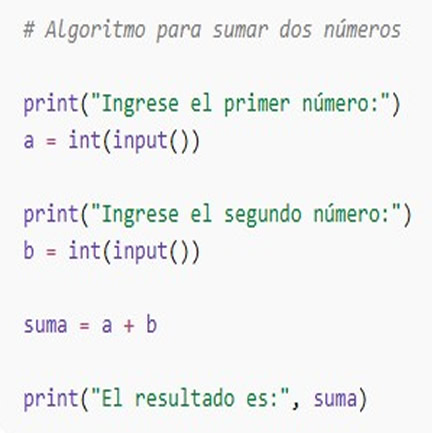

La categorización de los algoritmos se establece mediante parámetros técnicos específicos. Según la naturaleza de su sistema de representación, estos se dividen en cualitativos, definidos por secuencias de pasos lógicos, y cuantitativos, los cuales se articulan a través de cálculos numéricos para la obtención de soluciones.
Por lo que el procedimiento que se lleva a cabo es considerado un algoritmo apropiado el cual permite tener tres características esperadas.
- Exactitud, esto se deriva a que cada indicación o instrucción debe ser clara y coherente.
- limitación, para el desarrollo del algoritmo siempre se tendrá un inicio y un final; ya que sus son finitos al obtener el resultado como tal.
- Determinístico, siempre que se lleve a cabo con los mismos datos de entrada obtendrás los mismos resultados.
Dentro de los tipos de algoritmia se encuentran los siguientes:
- Algoritmo de búsqueda, es aquel que se encarga de establecer un procedimiento lógico paso a paso para ubicar un dato concreto dentro de un grupo amplio de información, existen en búsqueda secuencial(lineal) e intervalo(binario).
- Algoritmos de ordenamiento, son aquellos que se encargan de reorganizar los elementos de un listado en un orden específico (normalmente numérico o alfabético, ya sea ascendente o descendente).
- Algoritmos voraces, Se encargan de establecer una estrategia de resolución de problemas que sigue una regla muy simple: tomar la mejor decisión disponible en el momento presente, sin preocuparse por las consecuencias futuras.
- Algoritmo probabilístico, es donde se utiliza al azar como parte de su lógica para resolver un problema. A diferencia de los algoritmos tradicionales (deterministas), que ante la misma entrada siempre siguen los mismos pasos y dan el mismo resultado, un algoritmo probabilístico puede tomar decisiones diferentes en cada ejecución mediante un "generador de números aleatorios".
- Algoritmo informático, es aquel que establece en forma de paso a paso como si fuera una "receta" digital: una secuencia lógica, finita y definida de pasos que transforman una entrada (input) en un resultado (output).
Por ejemplo, la suma de dos números donde el algoritmo es la suma de dos números la cual tiene una serie de instrucciones ordenadas y coherentes que permiten obtener un resultado correcto.
- Primero, se inicia el proceso solicitando al usuario que ingrese el primer número, el cual se almacena en una variable. Posteriormente, se pide al usuario que introduzca el segundo número y también se guarda en otra variable.
- Segundo, Una vez que se tienen ambos valores, el algoritmo realiza la operación de suma entre los dos números almacenados. Después de efectuar el cálculo, el sistema muestra en pantalla el resultado obtenido para que el usuario pueda visualizarlo.
- Tercero, Finalmente, el algoritmo concluye el proceso, asegurando que cada paso se haya ejecutado en el orden establecido.
Este conjunto de instrucciones representa un procedimiento lógico y secuencial, característico de la algoritmia, en donde se siguen pasos definidos para resolver un problema
